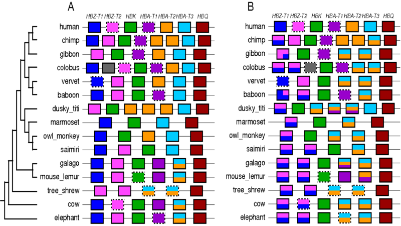
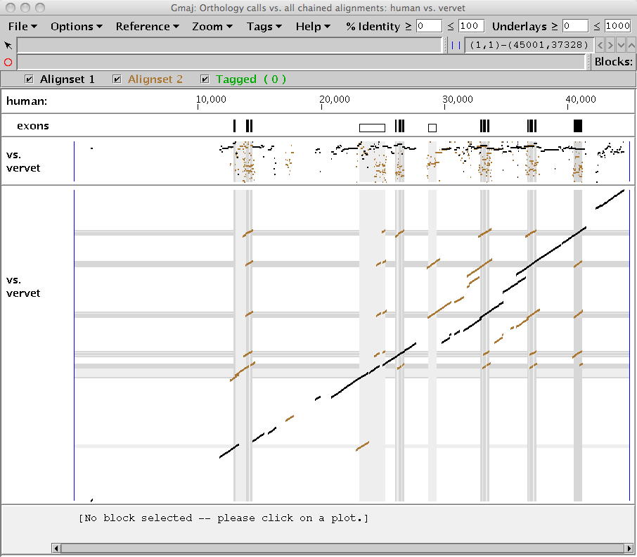
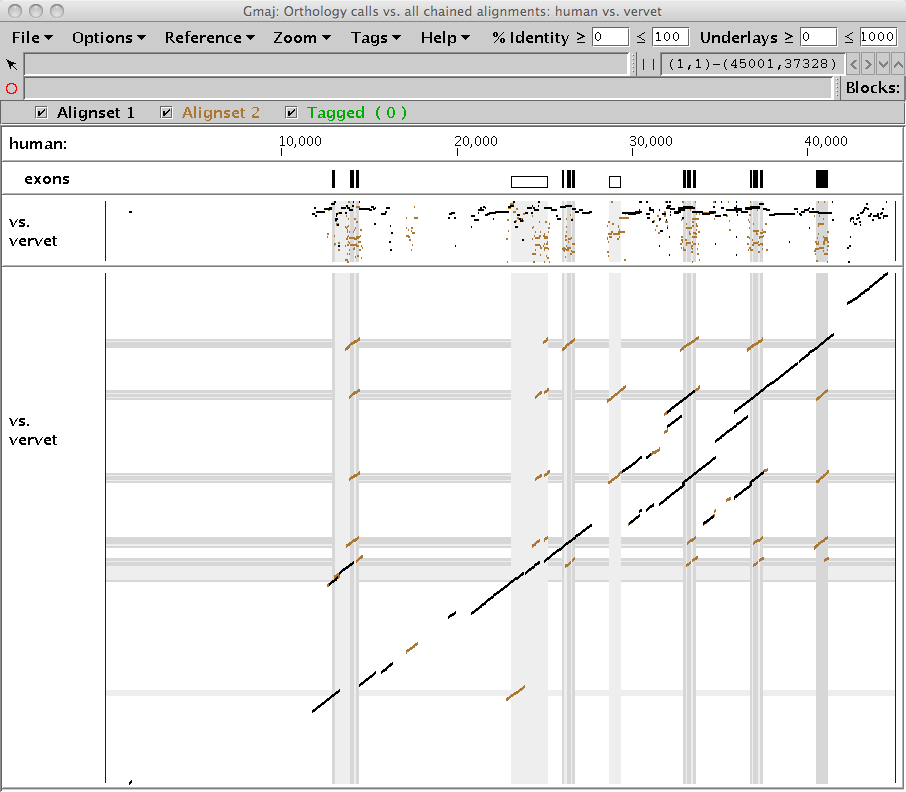

This document gives a brief illustration of how to examine the output from
the orthology mapping pipeline in CHAP 2, the second version of the Cluster
History Analysis Package. This pipeline is described in
Song et al. (2012), and the software package is
freely available from the Miller Lab at Penn State. Here we use the sample results for the
alpha-globin cluster, with human as the reference sequence, that are included
in the package's aglobin.example directory. To run the pipeline
on your own data, please follow the instructions in the main
README file.
When you run the ortho.sh script, the pipeline generates two
PostScript figures, which are placed in the figures.d subdirectory
of your cluster directory. These diagrams depict the orthologous relationships
of the genes in each non-reference species to those in the reference, using the
paradigms of X-orthology (based on genomic context)
and N-orthology (based on sequence content),
respectively. The two paradigms are distinguished by their treatment of
conversion events: X-orthology explicitly disregards their effects, while
N-orthology follows them back when tracing the origin of a sequence segment
(Song et al. 2012). Both require accurate
identification of conversions.

|
The colored boxes represent genes; those with dashed borders are pseudogenes. The first row is the specified reference species, in this case human. Its genes are labeled, and each has been assigned a unique color which is used to represent the orthologous relationships with the other sequences. Thus the colors in each non-human gene indicate its human orthologs. Note that the entire diagram is reference-specific; it generally does not say anything about relationships between the non-reference species.
Genes (or portions of genes) having multiple human orthologs are split vertically (i.e., using stacked colors). This can happen if there is a post-speciation duplication event in the reference sequence, so that both the original and newly duplicated genes in the reference are orthologous to the one in the non-reference sequence. For example, in Figure 1A for X-orthology, we see that the fifth gene in galago has orange and turquoise vertical sections, indicating that it is orthologous to two human genes: HBA-T2 and HBA-T3. Genes in mouse lemur and more distant species also show the same one-to-many relationship as the galago gene, but the simians do not, suggesting that the duplication likely occurred in the simian ancestor. Vertical splits can also be caused by conversion events. Note that the diagrams only show the inferred orthology relationships among the genes, not the reasons for those relationships; in general additional investigation is necessary to identify the evolutionary history leading to a particular situation. Vertical ordering of colors within the stack is not significant.
Horizontal partitions are used when parts of a gene differ in their orthology. For instance, the first baboon gene in Figure 1B is partitioned into two pieces horizontally: the leftmost part is mapped to HBZ-T1 (blue) while the rightmost part is orthologous to both HBZ-T1 (blue) and HBZ-T2 (pink). In this case the horizontal partitioning is due to a post-speciation conversion in the baboon sequence (where part of the second gene was copied over the first), and the vertical partitions are due to a post-speciation conversion in the human sequence. Again, these causes are not necessarily evident from the figure; further investigation was needed.
A gray color marks a gene (or portion of one) whose orthology could not be assigned by the pipeline. For instance, when a gene in a non-reference species is lost in the reference species, then it has no ortholog there. Conversion events may also result in gray sections for N-orthology, since a conversion in the reference lineage effectively deletes the content of the target region (unless it was preserved elsewhere by an earlier duplication or conversion). Sequencing errors, alignment errors, and false positive results from our conversion detector can also lead to unassignable regions. In Figure 1A, the second gene of colobus is unassigned because a false conversion call caused a post-speciation tandem duplication in the colobus HBZ-T2 gene to be treated as older.
Note that the lengths of boxes, spaces, and horizontal partitions are not proportional to their actual genomic lengths, but the order is the same as their genomic order.
Gmaj is a general-purpose interactive viewer for multiple-sequence alignments in MAF format, but it has recently been extended with special features to support analysis of gene cluster evolution. For basic information about using Gmaj, see the documentation for its current main release, which is rather old but still mostly applicable.
CHAP 2 includes a Unix/Linux shell script called gmaj-ortho.sh for
invoking Gmaj to examine the orthologous alignments that were identified by the
pipeline. It displays the many-to-many ortholog calls for a selected pair of
species, simultaneously with the full chained pairwise alignments.
To view the X-orthology calls between e.g. human and vervet, run the script as follows:
cd aglobin.example
../gmaj-ortho.sh human vervet context
This should produce a window similar to Figure 2, showing two different alignment sets simultaneously on the same pip and dotplot: the full chained pairwise alignments of the specified sequences (brown), with the subset identified as many-to-many X-orthologs drawn on top (black). Note that unlike the PostScript diagrams in Figure 1, the orthology calls depicted here are not limited to genes.

|
To view the N-orthology calls, run the script as follows:
cd aglobin.example
../gmaj-ortho.sh human vervet content
The many-to-many N-orthologs are drawn on top (black) as a subset of the full chained pairwise alignments of the specified sequences (brown), as in Figure 3. For this particular cluster, we see that more of the alignments are called as orthologous using the N-orthology method than with the X-orthology approach.

|
You may notice that one of the items you have seen on the Options menu,
"Gene Conversion Info", is not available; this is because Gmaj is not in
gene conversion mode. Currently Gmaj can either show how the orthologs were
called (via the gmaj-ortho.sh command discussed here) or how the
conversions were called (via the gmaj-conv.sh command discussed in
gmaj_geneconv.html), but not both. You can,
however, run both commands in separate windows to see them at the same time.
Song G, Riemer C, Dickins B, Kim HL, Zhang L, Zhang Y, Hsu C-H, Hardison RC, NISC Comparative Sequencing Program, Green ED, Miller W (2012) Revealing mammalian evolutionary relationships by comparative analysis of gene clusters. To appear in Genome Biol. Evol.
March 2012